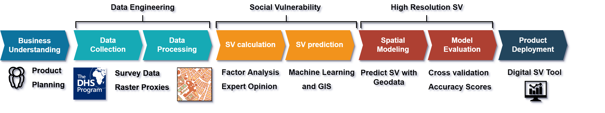

More Information About the DSVI Tool
This page provides detailed information about the Development and Social Vulnerability Index (DSVI) Data Visualization Tool, including methodology, data sources, and guidance on interpretation.
How to Use the Tool
Basic Usage
- Select a Layer: Use the sidebar to toggle different data layers on and off
- Adjust Opacity: Use the slider controls to adjust the transparency of each layer
- View Data: Click on areas of the map to view detailed information about that location
- Change Basemap: Use the basemap selector in the top right to change the background map
Advanced Features
- Compare Indicators: Toggle multiple layers to compare different aspects of vulnerability
- Adjust Colors: For vector layers, select different attributes and color schemes
- Export Maps: Use the screenshot function to export your map view for reports
- View Legend: Refer to the legend to understand the classification of values
Methodology
The DSVI integrates multiple indicators of development and social vulnerability to create a comprehensive assessment tool. DSVI combines Geographic Information Systems (GIS), Artificial Intelligence (AI), and Machine Learning (ML) technologies for building interactive high-resolution maps visualizing vulnerabilities. Our methodology follows these key steps:
- Data Collection: We gather data from multiple reliable sources, including Demographic and Health Surveys (DHS), satellite imagery, and international databases.
- Data Preprocessing: All indicators are norLebanonzed and prepared to ensure comparability across different measurement scales.
- Social Vulnerability Calculation: Using Principal Component Analysis (PCA) and expert opinion to calculate vulnerability scores for survey locations.
- Machine Learning Modeling: We use multiple algorithms to predict social vulnerability for areas without survey coverage, creating high-resolution vulnerability maps.
- Validation: The resulting indices are validated against ground truth data and expert assessments.
- Visualization: We develop interactive maps and dashboards to make the data accessible to a wide range of users.

Figure 1: DSVI Workflow from Business Understanding to Product Deployment
The calculation of Social Vulnerability follows a detailed process that involves:
- Collection and preprocessing of survey data
- Long listing of potentially relevant vulnerability indicators
- Short listing of indicators with feedback from local experts
- Principal component analysis on remaining indicators
- Discussion on indicator influence and components' meaning with experts
- Summation of components into single vulnerability score
Data Sources
The DSVI tool incorporates data from various sources to provide a comprehensive picture of development challenges and social vulnerability:
Survey Data
DSVI primarily uses Demographic and Health Survey (DHS) data with geolocations to calculate social vulnerability. For Lebanon, we used the DHS 2018 (Standard) and 2021 Malaria Indicator Survey (MIS) nationwide survey data. These surveys contain hundreds of variables covering dimensions of income, employment status, access to infrastructure, health, violence, gender equality, ethnic group, age, and more.
Spatial Data
We collect and create high-quality spatial data to find connections between geographical factors and calculated social vulnerability scores. These include socioeconomic variables (nightlight intensity, distance to healthcare, etc.) and biophysical variables (elevation, vegetation, etc.).
Expert Opinion
Social vulnerability is a contextual metric that requires expert input for weighting. For every country studied, domain knowledge of the specific circumstances must be considered. Expert input helps interpret the influence of humanitarian indicators and validate results.
Administrative Boundaries
Administrative level 1 (province/state) and level 2 (district/county) boundaries are sourced from national mapping agencies and the United Nations Office for the Coordination of Humanitarian Affairs (OCHA).
Geodatasets Used
The following geodatasets were used for predicting social vulnerability in Lebanon:
| Group | Variable | Type | Year |
|---|---|---|---|
| Socioeconomic | Nightlight Intensity | Raw data | 2024 |
| Socioeconomic | Proximity to Healthcare | Derived | 2024 |
| Socioeconomic | Proximity to Education | Derived | 2024 |
| Socioeconomic | Proximity to Main Road | Derived | 2024 |
| Socioeconomic | Population Density | Raw data | 2024 |
| Socioeconomic | Conflicts | Raw data | 2012-2024 |
| Socioeconomic | Relative Wealth | Derived | 2021 |
| Socioeconomic | Cell Tower Density | Derived | 2024 |
| Bio-physical | Temperature | Raw data | 2023 |
| Bio-physical | Precipitation | Raw data | 2023 |
| Bio-physical | Vegetation Indices | Raw data | 2024 |
| Bio-physical | Elevation | Raw data | - |

Figure 2: Social Vulnerability Map of populated areas in Lebanon
Key Indicators
The DSVI incorporates multiple indicators across several dimensions of development and vulnerability. The following indicator groups from DHS surveys were particularly important:
| Social | Health | Economy | Infrastructure | Malaria |
|---|---|---|---|---|
| Age | Health insurance | Working environment | Travel times to water/health | Mosquito nets and their use |
| Gender | Tuberculosis | Unemployment | Internet access | Treatment against malaria |
| Ethnicity | Vaccinations | Child labour | Building materials | Diagnostic blood tests |
| Migration | Disability | Access to banking | Transportation | Awareness of Malaria and methods to reduce risk |
| Household size | Malaria STD's | Urban/Rural | ||
| Literacy | Health insurance | Cooking fuel |
According to our analysis, the most important drivers of vulnerability in Lebanon were:
- From PCA Analysis: Literacy, Access to electricity, Education in single years, Educational attainment, Highest educational level, and Use of internet
- From Machine Learning Models: Nightlight intensity, Relative wealth, Distance to education, Celltower density, Distance to financial services, Conflicts, Population density, and Distance to healthcare
Vulnerability Classification
Vulnerability scores are classified into five categories for easier interpretation:
| Vulnerability Score | Vulnerability Class |
|---|---|
| 0 – 0.2 | Very Low |
| 0.2 – 0.4 | Low |
| 0.4 – 0.6 | Medium |
| 0.6 – 0.8 | High |
| 0.8 – 1.0 | Very High |
Frequently Asked Questions
How often is the data updated?
Data updates vary by source. Administrative statistics are updated as new data becomes available, typically annually. Survey data like DHS is updated on their survey cycle, typically every 5 years. Satellite-derived indicators are updated more frequently, with some being refreshed quarterly or monthly.
How should I interpret the vulnerability scores?
Vulnerability scores are norLebanonzed on a scale of 0-1, where 0 represents the lowest vulnerability and 1 represents the highest vulnerability within the dataset. These scores should be interpreted as relative measures within a country rather than absolute measures between countries.
Can I download the data for my own analysis?
Yes, all data layers can be downloaded in GeoJSON format for vector data or GeoTIFF format for raster data. Please note that some datasets may have specific usage restrictions or attribution requirements.
How accurate is the data at the local level?
Accuracy varies by indicator and region. Survey data like DHS is typically representative at the provincial level but may have wider confidence intervals for smaller areas. Satellite-derived indicators have consistent spatial resolution but may have varying accuracy depending on ground conditions. For critical decision-making, we recommend triangulating with local knowledge and data.
Contact Us
If you have questions about the DSVI tool, methodology, or data sources, please contact us at dsvi-team@example.org. We welcome feedback and suggestions for improving the tool.